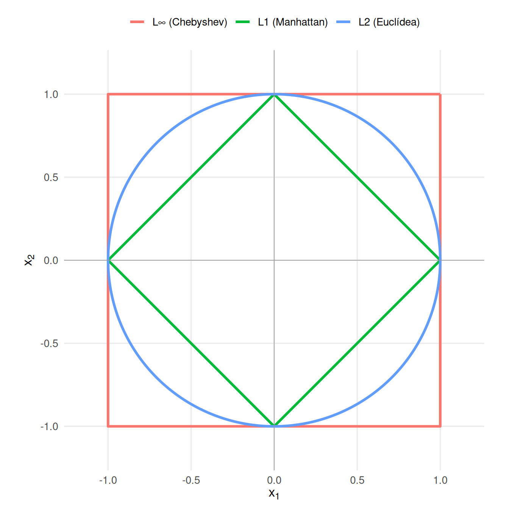

Código
library(tidyverse)
library(knitr)library(tidyverse)
library(knitr)Antes de agrupar individuos necesitamos decidir qué significa que dos observaciones sean parecidas. En un estudio de coches, ¿dos modelos se parecen por consumo, potencia, peso, número de cilindros o tipo de transmisión? La respuesta no está en el algoritmo: está en la definición de distancia.
El clustering no empieza con el algoritmo, empieza con la decisión de qué significa que dos observaciones sean parecidas.
Una misma tabla puede producir grupos distintos si cambiamos la distancia, el escalado o las variables activas. Por eso las distancias no son un detalle técnico: son la traducción matemática de una idea sustantiva de similitud.
Con variables numéricas, cada individuo puede verse como un punto \(x_i = (x_{i1}, \ldots, x_{ip})\) en un espacio de \(p\) dimensiones. Una distancia asigna a dos puntos \(x_i\) y \(x_j\) un número \(d(x_i,x_j)\) que resume su disimilitud.
Si \(d(x_i,x_j)\) es pequeño, los individuos son parecidos según las variables y la métrica elegidas. Si es grande, difieren mucho. Esta interpretación siempre está condicionada por las variables activas y por sus escalas.
Una distancia métrica es, en general, el tipo mas deseable de distancia. Para ser una métrica \(d\) debe cumplir:
No toda medida de disimilitud usada en la práctica cumple todas estas propiedades, pero estas condiciones ayudan a entender qué geometría estamos imponiendo.
La distancia euclídea mide la longitud del segmento recto que une dos puntos:
\[ d_E(x_i,x_j)=\sqrt{\sum_{k=1}^{p}(x_{ik}-x_{jk})^2}. \]
Es la distancia geométrica habitual. Una característica importante es que las diferencias entre individuos se elevan al cuadrado antes de agregarse. Como consecuencia, la distancia euclídea da relativamente más importancia a las discrepancias que se concentran en unas pocas variables.
Por ejemplo, consideremos dos posibles vectores de diferencias entre dos individuos:
\[ (1,1) \qquad\text{y}\qquad (2,0). \]
En ambos casos, la suma de las diferencias absolutas es la misma:
\[ 1+1=2, \qquad 2+0=2. \]
Sin embargo, sus distancias euclídeas son diferentes:
\[ \sqrt{1^2+1^2}=\sqrt{2}, \qquad \sqrt{2^2+0^2}=2. \]
Por tanto, para una misma discrepancia absoluta total, la distancia euclídea es mayor cuando esa discrepancia está concentrada en una variable que cuando está repartida entre varias.
Otra forma de verlo es observar qué ocurre cuando aumenta una sola diferencia. Si pasamos de
\[ (1,1) \quad\text{a}\quad (4,1), \]
la distancia euclídea pasa de
\[ \sqrt{2}\approx1.41 \quad\text{a}\quad \sqrt{17}\approx4.12. \]
Así, cuando una coordenada aumenta mucho respecto de las demás, su contribución relativa a la distancia total crece más bajo la distancia euclídea que bajo la distancia Manhattan.
Esta propiedad hace que, en clustering, una diferencia grande en una sola variable pueda tener una influencia considerable sobre qué observaciones se consideran próximas. Por ello, es especialmente importante comprobar que las variables estén en escalas comparables antes de utilizar esta distancia.
La distancia Manhattan suma las diferencias absolutas coordenada a coordenada:
\[ d_M(x_i,x_j)=\sum_{k=1}^{p}|x_{ik}-x_{jk}|. \]
A diferencia de la distancia euclídea, las diferencias no se elevan al cuadrado. Cada unidad adicional de diferencia en una variable añade exactamente una unidad a la distancia total.
Por ejemplo,
\[ d_M((0,0),(1,1))=1+1=2, \]
mientras que
\[ d_M((0,0),(2,0))=2+0=2. \]
Por tanto, para la distancia Manhattan no importa si una discrepancia total está concentrada en una sola variable o repartida entre varias: si la suma de las diferencias absolutas es la misma, la distancia también lo será.
Esto permite entender la diferencia con la distancia euclídea. En el ejemplo anterior,
\[ (1,1) \qquad\text{y}\qquad (2,0), \]
ambos vectores tienen distancia Manhattan igual a 2, mientras que sus distancias euclídeas son \(\sqrt{2}\) y \(2\), respectivamente. La distancia euclídea da, por tanto, relativamente más importancia a la discrepancia concentrada en una única coordenada.
La distancia Chebyshev se queda con la mayor diferencia absoluta entre variables:
\[ d_C(x_i,x_j)=\max_{k=1,\ldots,p}|x_{ik}-x_{jk}|. \]
Dos individuos serán lejanos si tienen al menos una variable muy distinta. Esta distancia es útil cuando la peor discrepancia importa más que la suma de discrepancias pequeñas. Por ejemplo, si para considerar dos perfiles similares exigimos que ninguna variable difiera demasiado.
La siguiente tabla resume el comportamiento de las tres métricas para dos vectores de diferencias:
| Diferencias | Manhattan \(L_1\) | Euclídea \(L_2\) | Chebyshev \(L_\infty\) |
|---|---|---|---|
| \((1,1)\) | \(2\) | \(\sqrt{2}\approx1.41\) | \(1\) |
| \((2,0)\) | \(2\) | \(2\) | \(2\) |
Este ejemplo permite ver tres comportamientos diferentes:
Las diferencias entre estas métricas también pueden visualizarse mediante sus bolas de radio 1, es decir, el conjunto de puntos cuya distancia al origen es menor o igual que 1:
\[ B(0,1)=\{x:d(x,0)\leq1\}. \]
En dos dimensiones:
para Manhattan (\(L_1\)),
\[ |x_1|+|x_2|\leq1, \]
y la bola tiene forma de rombo;
para la distancia euclídea (\(L_2\)),
\[ x_1^2+x_2^2\leq1, \]
y la bola es el círculo habitual;
para Chebyshev (\(L_\infty\)),
\[ \max(|x_1|,|x_2|)\leq1, \]
y la bola tiene forma de cuadrado.
library(ggplot2)
library(dplyr)
library(tidyr)
# L1: |x| + |y| = 1
bola_l1 <- tibble(
x = c(1, 0, -1, 0, 1),
y = c(0, 1, 0, -1, 0),
metrica = "L1 (Manhattan)"
)
# L2: x^2 + y^2 = 1
theta <- seq(0, 2 * pi, length.out = 500)
bola_l2 <- tibble(
x = cos(theta),
y = sin(theta),
metrica = "L2 (Euclídea)"
)
# Linf: max(|x|, |y|) = 1
bola_linf <- tibble(
x = c(1, 1, -1, -1, 1),
y = c(1, -1, -1, 1, 1),
metrica = "L∞ (Chebyshev)"
)
bolas <- bind_rows(
bola_l1,
bola_l2,
bola_linf
)
ggplot(bolas, aes(x = x, y = y, colour = metrica)) +
geom_path(linewidth = 1.2) +
geom_hline(yintercept = 0, linewidth = 0.3, colour = "grey60") +
geom_vline(xintercept = 0, linewidth = 0.3, colour = "grey60") +
coord_equal(
xlim = c(-1.15, 1.15),
ylim = c(-1.15, 1.15)
) +
labs(
x = expression(x[1]),
y = expression(x[2]),
colour = NULL
) +
theme_minimal(base_size = 13) +
theme(
legend.position = "top",
panel.grid.minor = element_blank()
)
La forma de estas bolas refleja directamente cómo cada distancia agrega las diferencias entre coordenadas. En particular, el rombo de \(L_1\) muestra que distintas combinaciones de diferencias pueden tener exactamente la misma suma absoluta, mientras que la curvatura de \(L_2\) hace que las discrepancias concentradas en una sola dirección tengan mayor peso relativo. En \(L_\infty\), cualquier punto del cuadrado está a la misma distancia máxima de 1 siempre que ninguna coordenada supere ese valor.
La distancia de Mahalanobis incorpora la matriz de covarianzas \(S\):
\[ d_{Mah}(x_i,x_j)=\sqrt{(x_i-x_j)^\top S^{-1}(x_i-x_j)}. \]
Si dos variables están muy correlacionadas, una diferencia en ambas no aporta tanta información nueva como dos diferencias independientes. Mahalanobis corrige esa redundancia y mide distancia en unidades de variabilidad multivariante.
Geométricamente, la distancia euclídea usa círculos o esferas de igual distancia. Mahalanobis usa elipses o elipsoides adaptados a la dispersión y correlación de los datos.
Mahalanobis depende de una estimación fiable de la matriz de covarianzas. Con pocas observaciones, muchas variables, outliers o colinealidad fuerte, puede ser inestable.
Otra posibilidad es comparar perfiles mediante la correlación entre dos observaciones:
\[ d_{cor}(x_i,x_j)=1-r(x_i,x_j). \]
Si usamos \(1-r\), dos individuos con perfiles paralelos tienen distancia pequeña aunque sus niveles absolutos sean distintos. A veces se usa \(1-|r|\) cuando interesan perfiles lineales tanto positivos como negativos, pero esa decisión cambia mucho la interpretación.
Esta distancia es útil cuando importa la forma del perfil y no la magnitud. Por ejemplo, dos canciones podrían tener una evolución de energía parecida aunque una sea más intensa que la otra en todos los tramos.
Nótese que esta distancia no es una métrica ya que no satisface la desigualdad triangular.
Comparamos cuatro puntos artificiales. El punto B difiere poco de A en dos variables; C difiere mucho en una sola variable; D tiene un perfil proporcional a A.
puntos <- data.frame(
x1 = c(1, 2, 5, 2),
x2 = c(1, 2, 1, 2),
row.names = c("A", "B", "C", "D")
)
puntos |>
rownames_to_column("punto") |>
kable()| punto | x1 | x2 |
|---|---|---|
| A | 1 | 1 |
| B | 2 | 2 |
| C | 5 | 1 |
| D | 2 | 2 |
dist_euclidean <- as.matrix(dist(puntos, method = "euclidean"))
dist_manhattan <- as.matrix(dist(puntos, method = "manhattan"))
dist_chebyshev <- as.matrix(dist(puntos, method = "maximum"))
kable(round(dist_euclidean, 2), caption = "Distancia euclídea")| A | B | C | D | |
|---|---|---|---|---|
| A | 0.00 | 1.41 | 4.00 | 1.41 |
| B | 1.41 | 0.00 | 3.16 | 0.00 |
| C | 4.00 | 3.16 | 0.00 | 3.16 |
| D | 1.41 | 0.00 | 3.16 | 0.00 |
kable(round(dist_manhattan, 2), caption = "Distancia Manhattan")| A | B | C | D | |
|---|---|---|---|---|
| A | 0 | 2 | 4 | 2 |
| B | 2 | 0 | 4 | 0 |
| C | 4 | 4 | 0 | 4 |
| D | 2 | 0 | 4 | 0 |
kable(round(dist_chebyshev, 2), caption = "Distancia Chebyshev")| A | B | C | D | |
|---|---|---|---|---|
| A | 0 | 1 | 4 | 1 |
| B | 1 | 0 | 3 | 0 |
| C | 4 | 3 | 0 | 3 |
| D | 1 | 0 | 3 | 0 |
La comparación entre A y B reparte la diferencia entre dos variables. La comparación entre A y C concentra la diferencia en una variable. Manhattan acumula cambios; Chebyshev solo mira el cambio máximo; euclídea queda en una posición intermedia, pero penaliza más las diferencias grandes.
Veamos ahora Mahalanobis en dos variables muy correlacionadas de mtcars: cilindrada (disp) y peso (wt). Para que el efecto no venga de las unidades de medida, primero estandarizamos ambas variables. Así la comparación se centra en la correlación.
Construimos dos pares artificiales:
A-B, separado en la dirección de la primera componente principal, donde disp y wt aumentan conjuntamente. Esa es la dirección larga de la nube.C-D, separado en la dirección de la segunda componente principal, donde una variable aumenta mientras la otra disminuye. Esa es la dirección corta de la nube.X_mtcars <- mtcars[, c("disp", "wt")]
Z_mtcars <- scale(X_mtcars)
pca_disp_wt <- prcomp(Z_mtcars, center = FALSE, scale. = FALSE)
rho <- cor(Z_mtcars[, "disp"], Z_mtcars[, "wt"])
lambda <- pca_disp_wt$sdev^2
scores_puntos <- tibble(
punto = c("A", "B", "C", "D"),
PC1 = c(-1.6, 1.6, 0, 0),
PC2 = c(0, 0, -1.6, 1.6),
par = c("A-B", "A-B", "C-D", "C-D")
)
coord_z <- as.matrix(scores_puntos[, c("PC1", "PC2")]) %*% t(pca_disp_wt$rotation[, 1:2])
colnames(coord_z) <- c("z_disp", "z_wt")
puntos_maha <- bind_cols(scores_puntos, as_tibble(coord_z))
segmentos_maha <- puntos_maha |>
group_by(par) |>
summarise(
x = first(z_disp),
y = first(z_wt),
xend = last(z_disp),
yend = last(z_wt),
.groups = "drop"
)
datos_z <- as_tibble(Z_mtcars) |>
set_names(c("z_disp", "z_wt"))
ejes_pc <- tibble(
eje = c("PC1", "PC2"),
x = 0,
y = 0,
xend = 2.2 * pca_disp_wt$rotation["disp", c("PC1", "PC2")],
yend = 2.2 * pca_disp_wt$rotation["wt", c("PC1", "PC2")]
)
datos_z |>
ggplot(aes(z_disp, z_wt)) +
geom_point(alpha = 0.65, size = 2) +
stat_ellipse(type = "norm", level = 0.68, color = "gray40", linewidth = 0.7) +
geom_segment(
data = ejes_pc,
aes(x = x, y = y, xend = xend, yend = yend),
inherit.aes = FALSE,
color = "gray25",
linewidth = 0.7,
arrow = arrow(length = grid::unit(0.16, "cm"))
) +
geom_text(
data = ejes_pc,
aes(x = xend, y = yend, label = eje),
inherit.aes = FALSE,
nudge_y = 0.12,
color = "gray20"
) +
geom_segment(
data = segmentos_maha,
aes(x = x, y = y, xend = xend, yend = yend, color = par),
linewidth = 1.2,
arrow = arrow(length = grid::unit(0.18, "cm"))
) +
geom_point(data = puntos_maha, aes(z_disp, z_wt, color = par), size = 3) +
geom_text(
data = puntos_maha,
aes(z_disp, z_wt, label = punto, color = par),
nudge_y = 0.14,
show.legend = FALSE
) +
coord_equal() +
labs(
title = "Mahalanobis en la dirección larga y corta de la nube",
subtitle = "Variables estandarizadas: el efecto visible viene de la correlación",
x = "Cilindrada estandarizada",
y = "Peso estandarizado",
color = "Par"
) +
theme_minimal()
La correlación positiva hace que la nube sea alargada. La dirección PC1 tiene mucha varianza: moverse por ahí es relativamente habitual. La dirección PC2 tiene poca varianza: moverse por ahí es raro porque rompe la relación positiva entre cilindrada y peso.
tibble(
correlacion = rho,
varianza_PC1 = lambda[1],
varianza_PC2 = lambda[2]
) |>
kable(digits = 3)| correlacion | varianza_PC1 | varianza_PC2 |
|---|---|---|
| 0.888 | 1.888 | 0.112 |
Por tanto, el peso de la separación es inversamente proporcional a la varianza en ese eje.
distancia_par <- function(p1, p2, datos, S) {
x1 <- as.numeric(datos[datos$punto == p1, c("z_disp", "z_wt")])
x2 <- as.numeric(datos[datos$punto == p2, c("z_disp", "z_wt")])
dif <- x1 - x2
tibble(
par = paste(p1, p2, sep = "-"),
direccion = if_else(par == "A-B", "PC1", "PC2"),
euclidea = sqrt(sum(dif^2)),
mahalanobis = sqrt(t(dif) %*% solve(S) %*% dif)
)
}
S <- cov(Z_mtcars)
comparacion <- bind_rows(
distancia_par("A", "B", puntos_maha, S),
distancia_par("C", "D", puntos_maha, S)
)
comparacion |>
mutate(across(c(euclidea, mahalanobis), function(x) round(x, 3))) |>
kable()| par | direccion | euclidea | mahalanobis |
|---|---|---|---|
| A-B | PC1 | 3.2 | 2.329 |
| C-D | PC2 | 3.2 | 9.561 |
Los dos pares tienen prácticamente la misma distancia euclídea, porque los hemos separado con la misma longitud en el plano estandarizado. Sin embargo, Mahalanobis distingue la dirección: A-B está lejos en la dirección de alta variabilidad, mientras que C-D está lejos en la dirección de baja variabilidad. La diferencia no viene de la escala de disp y wt, sino de su correlación.
Mahalanobis no solo pregunta cuánto cambian las variables, sino si el cambio sigue una dirección habitual de variación conjunta. Una diferencia en una dirección donde los datos ya varían mucho puede considerarse menos excepcional que una diferencia igual de grande en una dirección rara.
Si las variables están en unidades distintas, una variable con mucha dispersión puede dominar la distancia. Por eso es habitual estandarizar:
vars <- mtcars[, c("mpg", "disp", "hp", "wt")]
d_sin_escalar <- dist(vars)
d_escalada <- dist(scale(vars))
kable(round(as.matrix(d_sin_escalar)[1:4, 1:4], 1), caption = "Distancias sin escalar")| Mazda RX4 | Mazda RX4 Wag | Datsun 710 | Hornet 4 Drive | |
|---|---|---|---|---|
| Mazda RX4 | 0.0 | 0.3 | 54.7 | 98 |
| Mazda RX4 Wag | 0.3 | 0.0 | 54.7 | 98 |
| Datsun 710 | 54.7 | 54.7 | 0.0 | 151 |
| Hornet 4 Drive | 98.0 | 98.0 | 151.0 | 0 |
kable(round(as.matrix(d_escalada)[1:4, 1:4], 2), caption = "Distancias con variables escaladas")| Mazda RX4 | Mazda RX4 Wag | Datsun 710 | Hornet 4 Drive | |
|---|---|---|---|---|
| Mazda RX4 | 0.00 | 0.26 | 0.65 | 1.00 |
| Mazda RX4 Wag | 0.26 | 0.00 | 0.81 | 0.87 |
| Datsun 710 | 0.65 | 0.81 | 0.00 | 1.55 |
| Hornet 4 Drive | 1.00 | 0.87 | 1.55 | 0.00 |
El escalado no es una operación neutra: expresa que las variables se comparan en unidades relativas. Estandarizar equivale a sustituir cada valor por su puntuación típica:
\[ z_{ik}=\frac{x_{ik}-\bar{x}_k}{s_k}. \]
Después del escalado, una diferencia de una unidad significa una desviación típica, independientemente de si la variable original era consumo, potencia o peso.
Dos variables muy correlacionadas pueden duplicar información. Si ambas entran como activas en una distancia euclídea, ese patrón pesa dos veces. La selección de variables forma parte del análisis.
kable(round(cor(mtcars[, c("mpg", "disp", "hp", "wt", "qsec")]), 2))| mpg | disp | hp | wt | qsec | |
|---|---|---|---|---|---|
| mpg | 1.00 | -0.85 | -0.78 | -0.87 | 0.42 |
| disp | -0.85 | 1.00 | 0.79 | 0.89 | -0.43 |
| hp | -0.78 | 0.79 | 1.00 | 0.66 | -0.71 |
| wt | -0.87 | 0.89 | 0.66 | 1.00 | -0.17 |
| qsec | 0.42 | -0.43 | -0.71 | -0.17 | 1.00 |
Una estrategia posible es seleccionar variables no redundantes. Otra es usar una distancia que tenga en cuenta covarianzas, como Mahalanobis. Una tercera es transformar primero los datos, por ejemplo mediante PCA, y calcular distancias en los primeros componentes.
En variables categóricas, no tiene sentido restar etiquetas. Una codificación como automatico = 1 y manual = 2 no implica que la diferencia sea una unidad comparable a otra variable.
Las categorías pueden ser nominales, ordinales o cíclicas. Cada caso exige una idea distinta de similitud.
Una variable nominal no tiene orden natural. Ejemplos: tipo de transmisión, país, color, especie o género musical. Una distancia simple para una variable nominal es:
\[ \delta(x_{ik},x_{jk})= \begin{cases} 0, & \text{si } x_{ik}=x_{jk},\\ 1, & \text{si } x_{ik}\neq x_{jk}. \end{cases} \]
Con varias variables nominales, se puede usar la proporción de desacuerdos:
\[ d_{nom}(x_i,x_j)=\frac{1}{p}\sum_{k=1}^{p}\delta(x_{ik},x_{jk}). \]
Esta distancia trata todos los desacuerdos por igual. Cambiar de automatico a manual pesa lo mismo que cambiar de 4 cilindros a 8 cilindros, salvo que asignemos pesos diferentes.
coches_cat <- data.frame(
transmision = factor(c("manual", "manual", "automatico", "automatico")),
cilindros = factor(c("4", "6", "6", "8")),
motor = factor(c("recto", "recto", "V", "V")),
row.names = c("A", "B", "C", "D")
)
dist_nominal <- function(df) {
n <- nrow(df)
out <- matrix(0, n, n, dimnames = list(rownames(df), rownames(df)))
for (i in seq_len(n)) {
for (j in seq_len(n)) {
out[i, j] <- mean(df[i, ] != df[j, ])
}
}
out
}
kable(dist_nominal(coches_cat))| A | B | C | D | |
|---|---|---|---|---|
| A | 0.0000000 | 0.3333333 | 1.0000000 | 1.0000000 |
| B | 0.3333333 | 0.0000000 | 0.6666667 | 1.0000000 |
| C | 1.0000000 | 0.6666667 | 0.0000000 | 0.3333333 |
| D | 1.0000000 | 1.0000000 | 0.3333333 | 0.0000000 |
La interpretación es directa: 0 significa coincidencia completa; 1 significa desacuerdo en todas las variables nominales.
Una variable ordinal tiene categorías ordenadas, pero las distancias entre categorías consecutivas no tienen por qué ser iguales. Ejemplos: bajo, medio, alto; nivel educativo; satisfacción de 1 a 5.
Una opción sencilla es convertir los rangos a valores entre 0 y 1:
\[ z_{ik}=\frac{r_{ik}-1}{m_k-1}, \]
donde \(r_{ik}\) es el rango de la categoría del individuo \(i\) en la variable \(k\), y \(m_k\) es el número de categorías. Después se calcula una distancia numérica sobre esos valores.
ordinales <- data.frame(
satisfaccion = ordered(c("baja", "media", "alta", "alta"), levels = c("baja", "media", "alta")),
riesgo = ordered(c("bajo", "bajo", "medio", "alto"), levels = c("bajo", "medio", "alto")),
row.names = c("A", "B", "C", "D")
)
ordinal_a_01 <- function(x) {
(as.numeric(x) - 1) / (nlevels(x) - 1)
}
ordinal_num <- as.data.frame(lapply(ordinales, ordinal_a_01))
rownames(ordinal_num) <- rownames(ordinales)
kable(ordinal_num)| satisfaccion | riesgo | |
|---|---|---|
| A | 0.0 | 0.0 |
| B | 0.5 | 0.0 |
| C | 1.0 | 0.5 |
| D | 1.0 | 1.0 |
kable(round(as.matrix(dist(ordinal_num, method = "manhattan")) / ncol(ordinal_num), 2))| A | B | C | D | |
|---|---|---|---|---|
| A | 0.00 | 0.25 | 0.75 | 1.00 |
| B | 0.25 | 0.00 | 0.50 | 0.75 |
| C | 0.75 | 0.50 | 0.00 | 0.25 |
| D | 1.00 | 0.75 | 0.25 | 0.00 |
Esta transformación respeta el orden, pero asume que los saltos entre niveles son equivalentes. Si pasar de bajo a medio no tiene el mismo significado que pasar de medio a alto, conviene definir puntuaciones específicas con criterio sustantivo.
Algunas categorías tienen orden circular. El ejemplo clásico es la hora del día; en música, el tono o pitch class puede representarse en 12 clases donde Do está cerca de Do# y también de Si. Si codificamos tonos como 0, 1, …, 11, la diferencia lineal entre 0 y 11 sería 11, aunque musicalmente están a un semitono.
Para una variable cíclica con \(m\) posiciones, la distancia circular entre dos categorías codificadas como \(a\) y \(b\) puede definirse como:
\[ d_{circ}(a,b)=\frac{\min(|a-b|,m-|a-b|)}{\lfloor m/2 \rfloor}. \]
Así, la distancia queda entre 0 y 1.
tonos <- c("Do", "Do#", "Re", "Re#", "Mi", "Fa", "Fa#", "Sol", "Sol#", "La", "La#", "Si")
cod_tono <- setNames(0:11, tonos)
dist_tono <- function(a, b, m = 12) {
dif <- abs(cod_tono[a] - cod_tono[b])
min(dif, m - dif) / floor(m / 2)
}
pares_tonos <- data.frame(
tono_1 = c("Do", "Do", "Mi", "Si"),
tono_2 = c("Do#", "Si", "La", "Fa#")
)
pares_tonos$distancia_circular <- mapply(dist_tono, pares_tonos$tono_1, pares_tonos$tono_2)
kable(pares_tonos)| tono_1 | tono_2 | distancia_circular |
|---|---|---|
| Do | Do# | 0.1666667 |
| Do | Si | 0.1666667 |
| Mi | La | 0.8333333 |
| Si | Fa# | 0.8333333 |
Este ejemplo muestra por qué una categoría cíclica no debe tratarse como nominal pura ni como ordinal lineal. Si el tono de una canción importa para medir similitud musical, la distancia debe respetar la circularidad.
No todas las variables categóricas tienen por qué pesar igual. Si dos variables describen aspectos casi idénticos, conviene no duplicar su influencia. Si una variable es central para la pregunta aplicada, puede recibir mayor peso.
Matemáticamente, una distancia nominal ponderada puede escribirse como:
\[ d_{nom,w}(x_i,x_j)=\frac{\sum_{k=1}^{p} w_k \delta(x_{ik},x_{jk})}{\sum_{k=1}^{p} w_k}. \]
Los pesos \(w_k\) deben justificarse. No deberían elegirse después de mirar clusters solo para obtener una partición más atractiva.
En datos mixtos combinamos variables numéricas, nominales, ordinales y a veces binarias o cíclicas. La distancia de Gower resume similitudes variable a variable en una escala común.
La forma general se expresa como una disimilitud:
\[ d_G(i,j)=\frac{\sum_{k=1}^{p} w_{ijk} d_{ijk}}{\sum_{k=1}^{p} w_{ijk}}, \]
donde \(d_{ijk}\) es la disimilitud parcial entre los individuos \(i\) y \(j\) en la variable \(k\), y \(w_{ijk}\) indica si esa comparación es válida y qué peso recibe. Si no hay valores perdidos y todos los pesos valen 1, se reduce al promedio de disimilitudes parciales.
Para una variable numérica \(k\), Gower suele usar:
\[ d_{ijk}=\frac{|x_{ik}-x_{jk}|}{R_k}, \]
donde \(R_k=\max(x_k)-\min(x_k)\) es el rango observado. Así, cada diferencia numérica queda entre 0 y 1.
Esta normalización es parecida en espíritu al escalado, pero usa el rango. Tiene una interpretación simple: diferencia relativa respecto al recorrido observado de la variable. También implica sensibilidad a valores extremos, porque un outlier puede inflar \(R_k\) y reducir artificialmente las diferencias entre la mayoría de individuos.
Para variables nominales:
\[ d_{ijk}= \begin{cases} 0, & \text{si } x_{ik}=x_{jk},\\ 1, & \text{si } x_{ik}\neq x_{jk}. \end{cases} \]
El desacuerdo completo vale 1, igual que la máxima diferencia posible en una variable numérica reescalada.
Para variables ordinales, una estrategia habitual es convertir categorías ordenadas en puntuaciones \(z_{ik}\) entre 0 y 1 y después usar:
\[ d_{ijk}=|z_{ik}-z_{jk}|. \]
Esto permite que bajo frente a alto sea más distante que bajo frente a medio.
En algunas variables binarias, la coincidencia en ausencia no debe contar como similitud fuerte. Por ejemplo, dos pacientes pueden compartir que no tienen una enfermedad rara; esa coincidencia quizá no dice mucho. Gower permite ajustar pesos para que ciertas comparaciones no contribuyan.
Si falta una variable para un individuo, esa variable no debe crear similitud ni disimilitud artificial. Se usa \(w_{ijk}=0\) para excluirla del promedio:
\[ w_{ijk}= \begin{cases} 1, & \text{si la variable } k \text{ puede compararse entre } i \text{ y } j,\\ 0, & \text{si falta información o la comparación no procede.} \end{cases} \]
Esta es una ventaja práctica de Gower: puede promediar solo las variables comparables para cada par.
Construimos una versión mixta de mtcars:
mtcars_mixed <- mtcars
mtcars_mixed$cyl <- factor(mtcars_mixed$cyl)
mtcars_mixed$vs <- factor(mtcars_mixed$vs, labels = c("V", "Straight"))
mtcars_mixed$am <- factor(mtcars_mixed$am, labels = c("automatico", "manual"))
mtcars_mixed$gear <- factor(mtcars_mixed$gear)
mtcars_mixed$carb <- factor(mtcars_mixed$carb)
tibble(
variable = names(mtcars_mixed),
clase = sapply(mtcars_mixed, function(x) class(x)[1])
) |>
kable()| variable | clase |
|---|---|
| mpg | numeric |
| cyl | factor |
| disp | numeric |
| hp | numeric |
| drat | numeric |
| wt | numeric |
| qsec | numeric |
| vs | factor |
| am | factor |
| gear | factor |
| carb | factor |
Calculamos una versión manual de Gower para un subconjunto con variables numéricas y categóricas.
datos_gower <- mtcars_mixed[1:6, c("mpg", "hp", "wt", "cyl", "am")]
datos_gower |>
rownames_to_column("modelo") |>
kable()| modelo | mpg | hp | wt | cyl | am |
|---|---|---|---|---|---|
| Mazda RX4 | 21.0 | 110 | 2.620 | 6 | manual |
| Mazda RX4 Wag | 21.0 | 110 | 2.875 | 6 | manual |
| Datsun 710 | 22.8 | 93 | 2.320 | 4 | manual |
| Hornet 4 Drive | 21.4 | 110 | 3.215 | 6 | automatico |
| Hornet Sportabout | 18.7 | 175 | 3.440 | 8 | automatico |
| Valiant | 18.1 | 105 | 3.460 | 6 | automatico |
gower_manual <- function(df) {
n <- nrow(df)
out <- matrix(0, n, n, dimnames = list(rownames(df), rownames(df)))
numericas <- sapply(df, is.numeric)
rangos <- sapply(df[numericas], function(x) diff(range(x, na.rm = TRUE)))
for (i in seq_len(n)) {
for (j in seq_len(n)) {
partes <- numeric(0)
for (v in names(df)) {
xi <- df[[v]][i]
xj <- df[[v]][j]
if (is.na(xi) || is.na(xj)) {
next
}
if (is.numeric(df[[v]])) {
r <- rangos[v]
partes <- c(partes, ifelse(r == 0, 0, abs(xi - xj) / r))
} else {
partes <- c(partes, as.numeric(xi != xj))
}
}
out[i, j] <- mean(partes)
}
}
out
}
kable(round(gower_manual(datos_gower), 3))| Mazda RX4 | Mazda RX4 Wag | Datsun 710 | Hornet 4 Drive | Hornet Sportabout | Valiant | |
|---|---|---|---|---|---|---|
| Mazda RX4 | 0.000 | 0.045 | 0.371 | 0.321 | 0.800 | 0.483 |
| Mazda RX4 Wag | 0.045 | 0.000 | 0.415 | 0.277 | 0.756 | 0.438 |
| Datsun 710 | 0.371 | 0.415 | 0.000 | 0.658 | 0.971 | 0.829 |
| Hornet 4 Drive | 0.321 | 0.277 | 0.658 | 0.000 | 0.513 | 0.196 |
| Hornet Sportabout | 0.800 | 0.756 | 0.971 | 0.513 | 0.000 | 0.400 |
| Valiant | 0.483 | 0.438 | 0.829 | 0.196 | 0.400 | 0.000 |
Ahora comparamos con cluster::daisy().
gower <- cluster::daisy(datos_gower, metric = "gower")
kable(round(as.matrix(gower), 3))| Mazda RX4 | Mazda RX4 Wag | Datsun 710 | Hornet 4 Drive | Hornet Sportabout | Valiant | |
|---|---|---|---|---|---|---|
| Mazda RX4 | 0.000 | 0.045 | 0.371 | 0.321 | 0.800 | 0.483 |
| Mazda RX4 Wag | 0.045 | 0.000 | 0.415 | 0.277 | 0.756 | 0.438 |
| Datsun 710 | 0.371 | 0.415 | 0.000 | 0.658 | 0.971 | 0.829 |
| Hornet 4 Drive | 0.321 | 0.277 | 0.658 | 0.000 | 0.513 | 0.196 |
| Hornet Sportabout | 0.800 | 0.756 | 0.971 | 0.513 | 0.000 | 0.400 |
| Valiant | 0.483 | 0.438 | 0.829 | 0.196 | 0.400 | 0.000 |
La distancia de Gower final es un promedio interpretable: una distancia de 0.25 puede leerse como una disimilitud media del 25% sobre las variables comparadas, siempre que todas hayan sido tratadas con una codificación razonable.
mtcarsEl siguiente ejemplo muestra cómo cambia la noción de vecindad al usar solo variables numéricas escaladas o variables mixtas con Gower.
vecinos <- function(d, individuo, k = 5) {
orden <- sort(d[individuo, ])
data.frame(
vecino = names(orden)[2:(k + 1)],
distancia = as.numeric(orden[2:(k + 1)])
)
}
d_num <- as.matrix(dist(scale(mtcars[, c("mpg", "disp", "hp", "wt")])))
vecinos(d_num, "Mazda RX4") |>
kable()| vecino | distancia |
|---|---|
| Mazda RX4 Wag | 0.2606143 |
| Volvo 142E | 0.3610754 |
| Toyota Corona | 0.4142088 |
| Datsun 710 | 0.6486248 |
| Merc 230 | 0.6741398 |
d_gower <- as.matrix(cluster::daisy(mtcars_mixed, metric = "gower"))
vecinos(d_gower, "Mazda RX4") |>
kable()| vecino | distancia |
|---|---|
| Mazda RX4 Wag | 0.0119879 |
| Merc 280 | 0.2344926 |
| Ferrari Dino | 0.2367353 |
| Merc 280C | 0.2464020 |
| Volvo 142E | 0.3191166 |
Si cambian los vecinos más próximos, no significa que una distancia sea verdadera y otra falsa. Significa que responden a definiciones distintas de parecido.
Un mapa de calor ayuda a ver patrones de proximidad en un subconjunto pequeño.
d <- as.matrix(dist(scale(mtcars[1:12, c("mpg", "disp", "hp", "wt")])))
as.data.frame(as.table(d)) |>
as_tibble() |>
rename(coche_1 = Var1, coche_2 = Var2, distancia = Freq) |>
ggplot(aes(coche_1, coche_2, fill = distancia)) +
geom_tile(color = "white") +
scale_fill_viridis_c(option = "C") +
labs(
title = "Distancias euclídeas estandarizadas",
x = "Coche",
y = "Coche",
fill = "Distancia"
) +
theme_minimal()+
theme(
axis.text.x = element_text(angle = 45, hjust = 1)
)
Los bloques oscuros o claros pueden sugerir proximidades internas, pero el mapa depende por completo de la distancia elegida.
Las variables activas construyen la distancia. Las suplementarias ayudan a interpretar después. En mtcars, am o cyl pueden dejarse fuera del cálculo y usarse luego para evaluar si los grupos encontrados tienen sentido.
En un análisis musical, podríamos usar tempo, energía, valencia y tono como variables activas, pero reservar el artista como suplementaria para interpretar si los clusters coinciden con estilos o catálogos concretos. Si el artista entrara como variable activa, el análisis podría agrupar por autoría más que por sonido.
La elección debe responder a la pregunta aplicada:
No existe una distancia universalmente mejor. Una distancia es adecuada si representa bien la noción de parecido relevante para la pregunta y los datos.
Toda técnica de clustering depende de una noción de similitud. Las distancias euclídea, Manhattan, Chebyshev y Mahalanobis inducen geometrías distintas en datos numéricos. Las variables categóricas requieren tratamientos específicos para nominales, ordinales y cíclicas. En datos mixtos, Gower promedia disimilitudes parciales reescaladas, pero sigue dependiendo de codificaciones, pesos y decisiones metodológicas.
mtcars con y sin escalado y compara los vecinos más cercanos de Mazda RX4.mtcars, compara los vecinos de Mazda RX4 usando euclídea, Manhattan y Chebyshev sobre variables escaladas.mtcars tratarías como categóricas en un análisis mixto y por qué.mtcars.